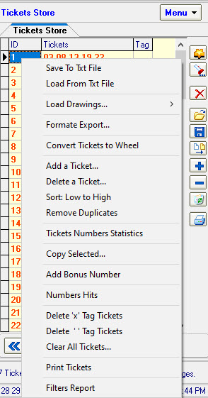

SamLotto software supports analysis, statistics and editing of your betting tickets. Some times you need edit your tickets lines, SamLotto support add, delete, save, export to file, import from file, print tickets to paper, add bouns and formate export.
Click Menu button or Right-click Pop-up edit tickets menu:

Save Tickets File - Save tickets list to the tickets file.
Load Tickets File - Load tickets list from the tickets file.
Load Drawings - Load previous drawings results. suppors load previous 10 drawings, past 20 drawings, past 30 drawings, past 50 drawings, past 100 drawings, past 200 drawings, past 500 drawings and All drawings.
Save To Txt File - Save tickets list to Txt file.
Load From Txt File - Load tickets list from Txt file.
Formate Export - Formate export tickets to txt file.
Add Ticket - Add a ticket.
Delete Ticket - Delete a line.
Sort: Low to High - For each line, the numbers are re-ordered from smallest to largest
Copy Selected - Copy the selected area.
Add Bonus Number - In the last position of each line, add the bonus number.
Numbers Hits - Statistic every number appear times in all tickets and sort all number that appears.
Delete 'x' Tag Tickets - Delete Tag = "X" in lines.
Delete ' ' Tag Tickets - Delete Tag = " " in lines.
Clear All Tickets - Clear the all lines.
Print Tickets - Print tickets lines to paper.
Filters Report - Display the most recent filter report.
Home
Page: http://www.samlotto.com
Support:support@samlotto.com
Copyright: © SamLotto Lottery Software Team All rights reserved.